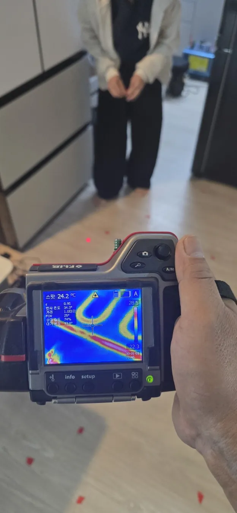
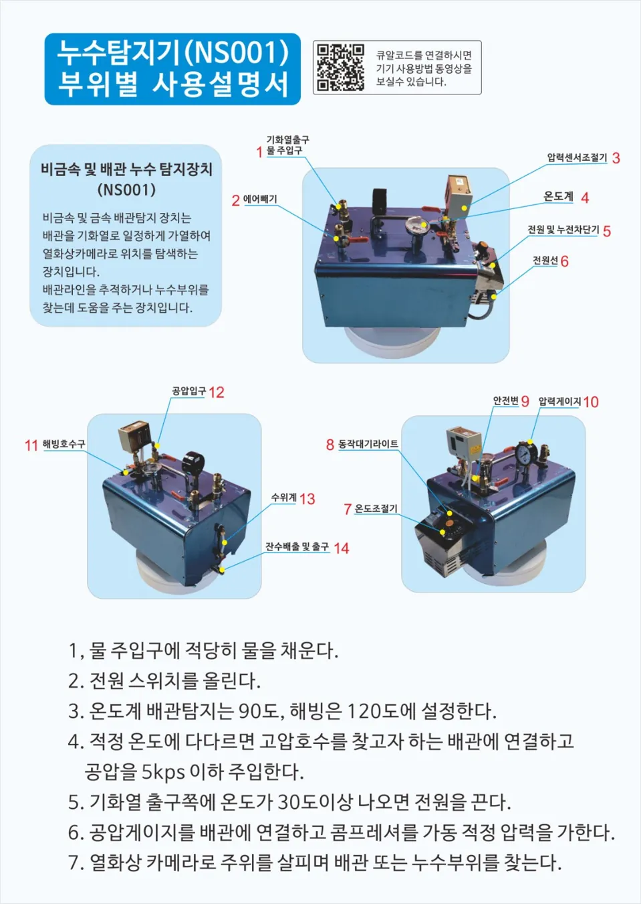
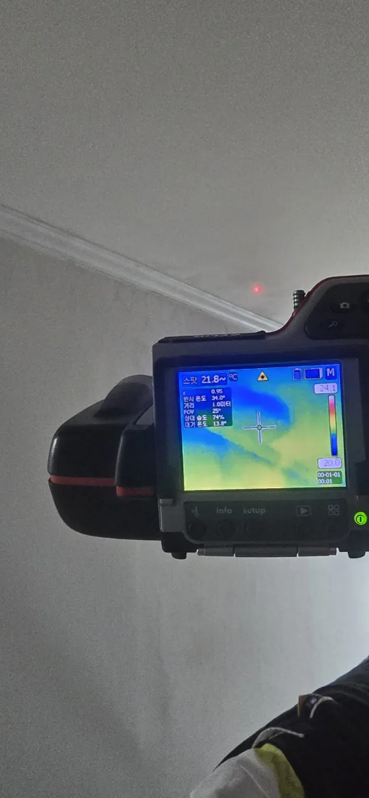
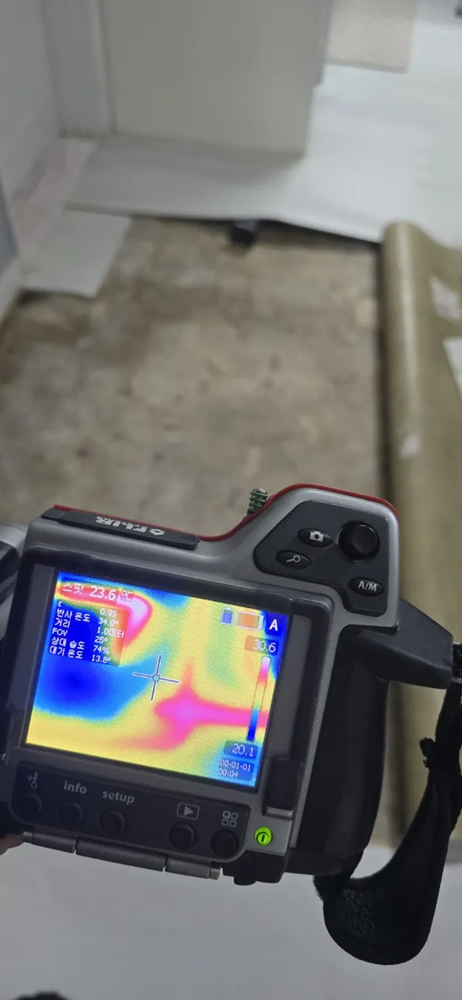
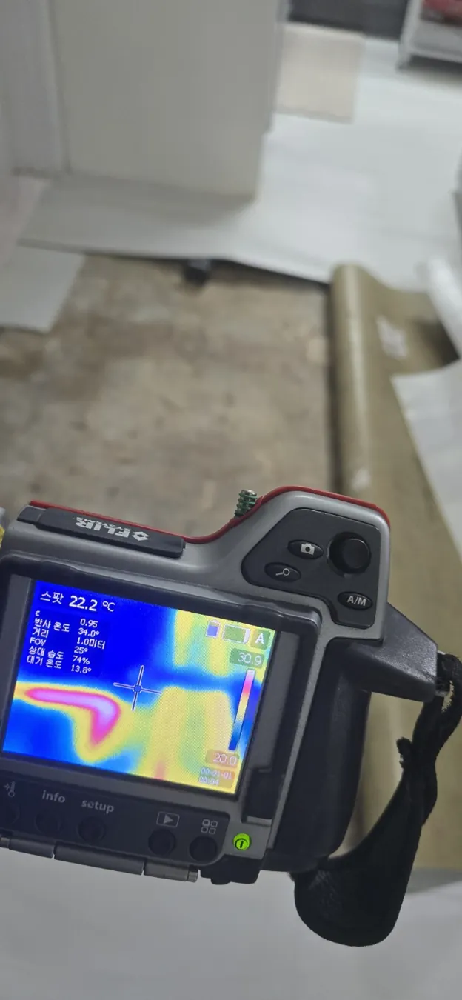
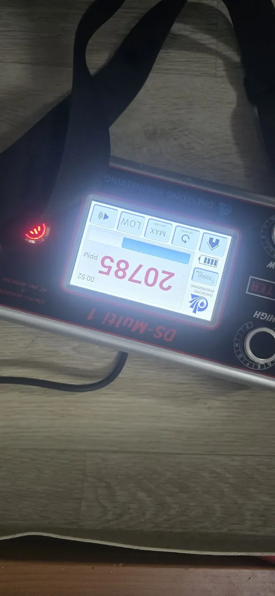
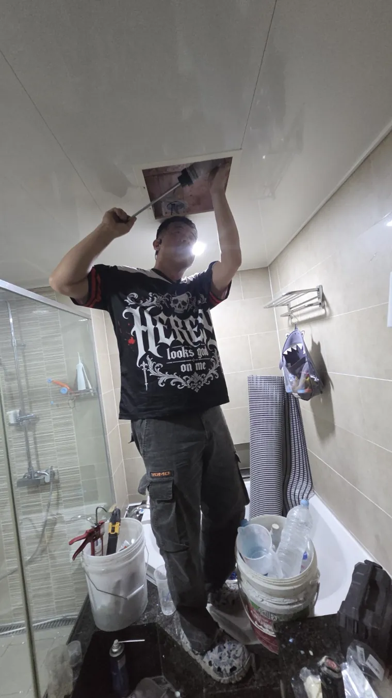
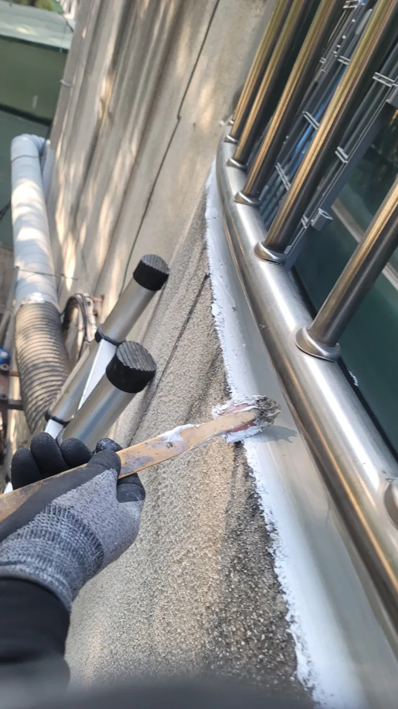
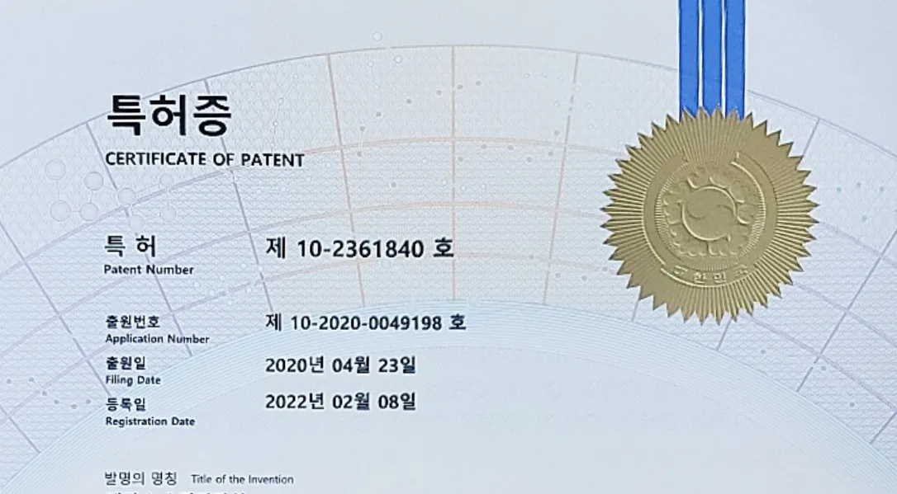
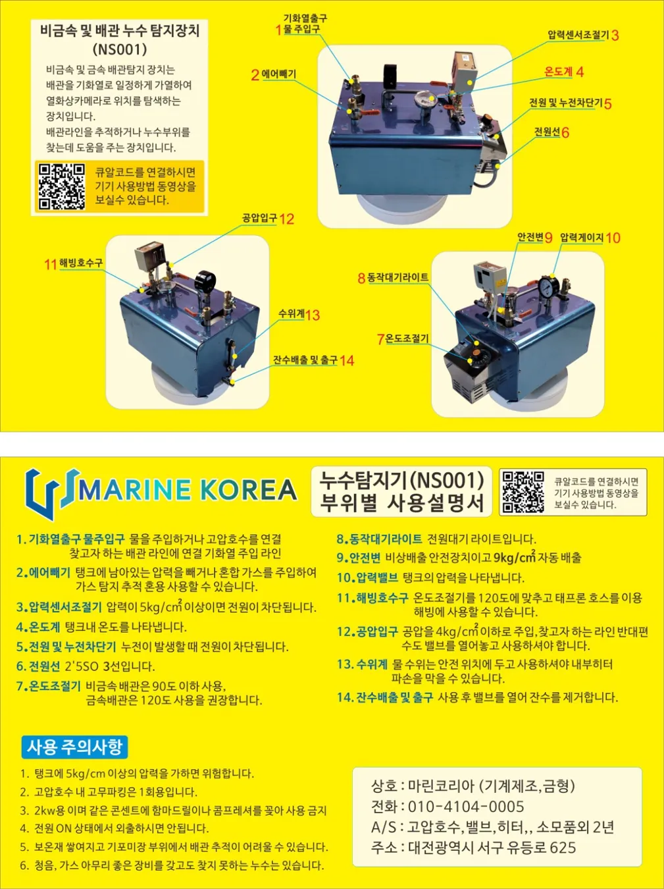

🌡️
첨단 누수탐지
열화상 카메라와 현장 점검을 통해 누수 의심 구간을 확인합니다.
대전 누수 탐지 · 배관·관로 탐지 · 옥상 우레탄 방수
보험 청구 관련 자료 및 피해 복구 상담

현장 상황에 맞춰 필요한 점검과 작업 범위를 안내합니다.
열화상 카메라와 현장 점검을 통해 누수 의심 구간을 확인합니다.
좁은 공간과 배관 내부 등 육안 확인이 어려운 곳을 점검합니다.
512Hz 송신기·수신기를 이용해 관로 위치와 경로를 확인합니다.
옥상 및 외부 방수 상태를 점검하고 적합한 시공 방법을 상담합니다.
욕실·베란다·천장 등 물이 스미는 원인을 살펴봅니다.
보험 청구에 필요한 현장 자료와 피해 복구 작업을 상담합니다.

장비는 누수 원인 파악을 돕는 수단입니다. 실제 진단은 현장 상황과 여러 점검 결과를 종합해 진행합니다.
보내주신 실제 장비 및 작업 사진을 활용했습니다. 사진만으로 누수 원인이 확정되는 것은 아닙니다.






제공된 특허증과 NS001 사용설명서 자료를 소개합니다.

특허번호 제10-2361840호 · 등록일 2022년 2월 8일. 특허권과 업체의 관계는 확인 후 별도 표기합니다.

배관 내부의 누수 의심 위치를 찾는 데 활용하는 장비의 구성과 사용설명 자료입니다.
누수 발생 위치와 증상을 듣습니다.
물 샘 흔적과 설비 상태를 확인합니다.
필요한 장비를 사용해 원인을 살핍니다.
점검 결과와 필요한 작업 범위를 설명합니다.
방문 가능 여부와 일정은 전화로 확인해 주세요.